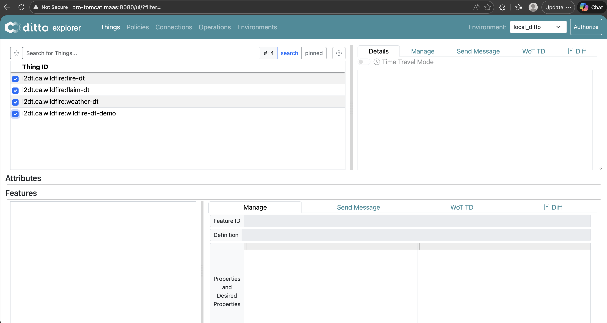

FLAIM-DT
Overview
This page outlines how FLAIM operates as a Digital Twin within the Eclipse Ditto environment and provides access to information on EarthOne.
EDA DT Infrastructure
The main Eclipse Ditto platform is hosted on an EarthDaily dev machine for continuous operation across multiple Things. The FLAIM Thing runs locally with a script that reads input and output data from FLAIM products on EarthOne.
The FLAIM Digital Twin code in this repository is organized as follows:
flaim-dt/
├── main.py # Ditto/MQTT connection and message handling
├── earthone_access.py # EarthOne product access (burn data; probability data)
├── flaim_data.py # Payload parsing and data retrieval logic
└── requirements.txt # Python package versionsFLAIM Digital Twin
The FLAIM DT currently connects to these EarthOne products:
- Burn Data: Locations of previous fires (inputs to the FLAIM model)
- Burn Probability: Burn probability in a given location and time (output of the FLAIM model)
Burn Data
This data provides location and dates of previous fires. Access via subject get_burn_data. The FLAIM DT
identifies the EarthOne product, retrieves the most recent file metadata from the payload, and updates the
FLAIM Thing in Ditto.
Accepted location values (must match EarthOne product coverage):
- California
- Oregon
- Washington
- Idaho
- Nevada
- Arizona
Example payload:
{
"location": "california"
}If you request a location that is not listed in EarthOne, the request will return an error. A successful request will return the following output:
"burn": {
"timestamp": <unix-timestamp>,
"location": "california",
"state_code": "CA",
"burn": {
"id": "<burn-id>",
"name": "<burn-name>",
"product_id": "<product-id>",
"acquired": "<acquired-date>",
"cs_code": "<cs-code>",
"latitude": 34.803,
"longitude": -118.878,
"x_pixels": 307,
"y_pixels": 625,
"size": "307 x 625"
}
}Probability Data
This data provides a fire burn probability (0→1) at a location and time. Access via subject get_probability_data.
The FLAIM DT dentifies the EarthOne product, retrieves the most recent file metadata from the payload, and updates the
FLAIM Thing in Ditto.
Payload uses latitude and longitude that intersect an EarthOne product tile:
{
"location": "lat=46.4&lon=-121.5"
}If you request coordinates that are outside the EarthOne product tiles, the request will return an error. A successful request will return the following output:
"probability": {
"timestamp": <unix-timestamp>,
"location": "lat=46.4&lon=-121.5",
"latitude": 46.4,
"longitude": -121.5,
"data": {
"id": "<probability-id>",
"name": "<probability-name>",
"product_id": "<product-id>",
"acquired": "<acquired-date>",
"cs_code": "<cs-code>",
"x_pixels": 948,
"y_pixels": 948,
"pixels": "948 x 948",
"latitude": 46.4,
"longitude": -121.5,
"min": 0,
"max": 0.4157899022102356,
"mean": 0.05396370589733124,
"std": 0.01530715636909008,
"band_id": "probability"
}
}Example: Interoperating with other Digital Twins
The data used in FLAIM could be utilized as inputs to other digital twins. One example was a "wildfire digital twin" that was created to test this interoperability. The Wildfire DT "calculates" wildfire risk using inputs from three different api-structured digital twins: Weather, Fire, and FLAIM.
Digital Twins Running locally:
- FLAIM DT
- Wildfire DT Demo
Digital Twins Running on dev machine:
- Weather DT
- Fire DT

Sending a Digital Twin Request
Using the same location as the
Probability Data example, wildfire data is accessed via subject
get_wildfire_data. The Wildfire DT refreshes upstream Things, retrieves metadata from the payload,
and updates the Wildfire Thing.
Data Results
Once the Wildfire DT receives data from the other Things and runs its model, results appear in the Ditto UI.
{
"timestamp": <unix-timestamp>,
"location": "lat=46.4&lon=-121.5",
"latitude": 46.4,
"longitude": -121.5,
"weather_data": {
"coord": {
"lon": -121.5,
"lat": 46.4
},
"weather": [
{
"id": 802,
"main": "Clouds",
"description": "scattered clouds",
"icon": "03d"
}
],
"base": "stations",
"main": {
"temp": 292.6,
"feels_like": 291.67,
"temp_min": 292.6,
"temp_max": 292.6,
"pressure": 1014,
"humidity": 41,
"sea_level": 1014,
"grnd_level": 855
},
"visibility": 10000,
"wind": {
"speed": 5.95,
"deg": 289,
"gust": 11.27
},
"clouds": {
"all": 46
},
"dt": 1781649025,
"sys": {
"country": "US",
"sunrise": 1781611978,
"sunset": 1781668834
},
"timezone": -25200,
"id": 5803964,
"name": "Morton",
"cod": 200
},
"fire_data": [
"latitude,longitude,bright_ti4,scan,track,acq_date,acq_time,satellite,instrument,confidence,version,bright_ti5,frp,daynight",
"19.3964,-155.2742,332.22,0.44,0.46,2026-06-16,7,N,VIIRS,n,2.0NRT,294.25,4.01,D",
"19.40017,-155.27882,349.1,0.44,0.46,2026-06-16,7,N,VIIRS,n,2.0NRT,308.29,13.02,D",
"19.40067,-155.27466,355.58,0.44,0.46,2026-06-16,7,N,VIIRS,l,2.0NRT,335.1,13.02,D",
"19.40117,-155.27049,367,0.44,0.46,2026-06-16,7,N,VIIRS,h,2.0NRT,326.06,22.67,D"
],
"flaim_probability": {
"timestamp": <unix-timestamp>,
"location": "lat=46.4&lon=-121.5",
"latitude": 46.4,
"longitude": -121.5,
"data": {
"id": "<probability-id>",
"name": "<probability-name>",
"product_id": "<product-id>",
"acquired": "<acquired-date>",
"cs_code": "<cs-code>",
"x_pixels": <x-pixels>,
"y_pixels": <y-pixels>,
"pixels": "<x-pixels> x <y-pixels>",
"latitude": 46.4,
"longitude": -121.5,
"min": 0,
"max": 0.4157899022102356,
"mean": 0.05396370589733124,
"std": 0.01530715636909008,
"band_id": "probability"
}
},
"risk": 10%
}